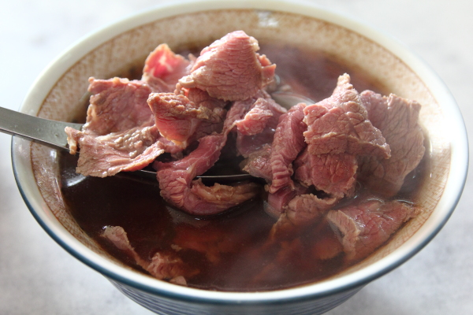

牛肉湯
由於強調使用宰殺後不久的溫體牛肉而非冷凍肉品，因此在離牛墟（即牛市集）較遠的中、北部非常少。臺南市善化區與鹽水區為目前臺灣主要的牛墟所在，使得臺南的牛肉湯特別普遍。作法是將溫體牛肉切成薄片，以牛大骨熬煮之清湯汆燙至五至七分熟，再搭配白飯或肉燥飯食用。臺南地區之牛肉湯店大多是專賣店，並因牛隻宰殺多在清晨，店家許多約於凌晨五點後即開始營業，故也可作為早餐。
台南牛肉湯都是直接碗中放入牛肉片，直接淋上高湯燙熟，所以都會呈現半紅半熟的牛肉片，很粉嫩的感覺，看起來就非常好吃，稍微咀嚼就入口了，融化在喉頭時有種醇厚的味道，連湯頭喝起來都是鮮美到不行，是用雞湯熬的高湯，非常特別。
